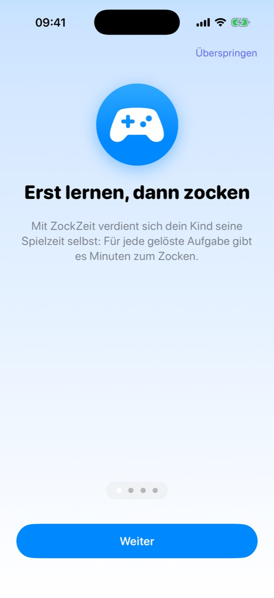
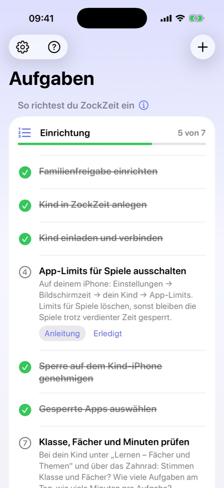
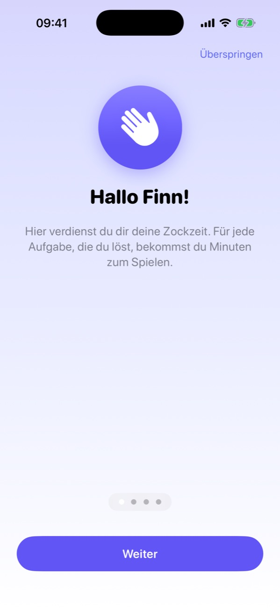
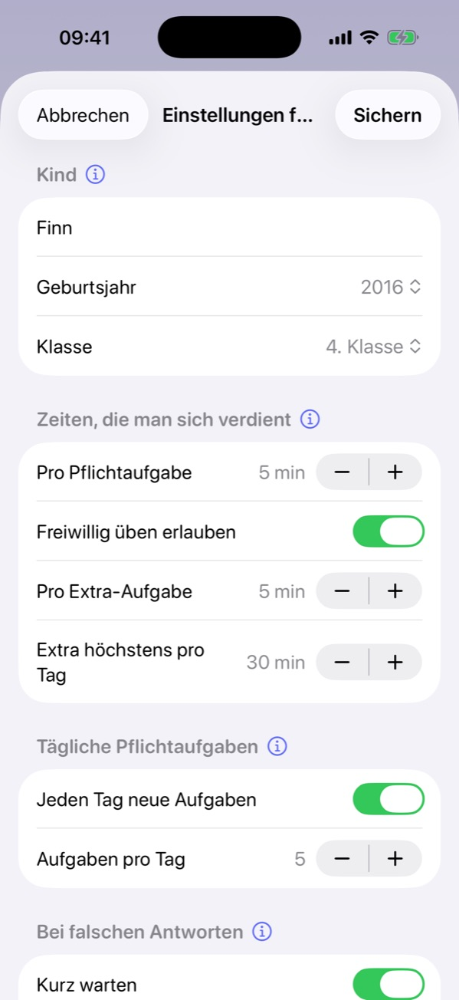
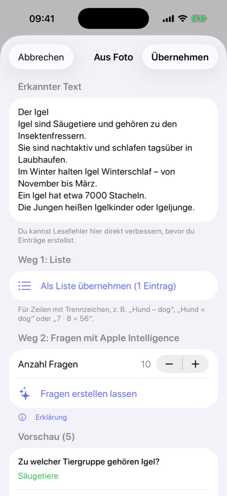
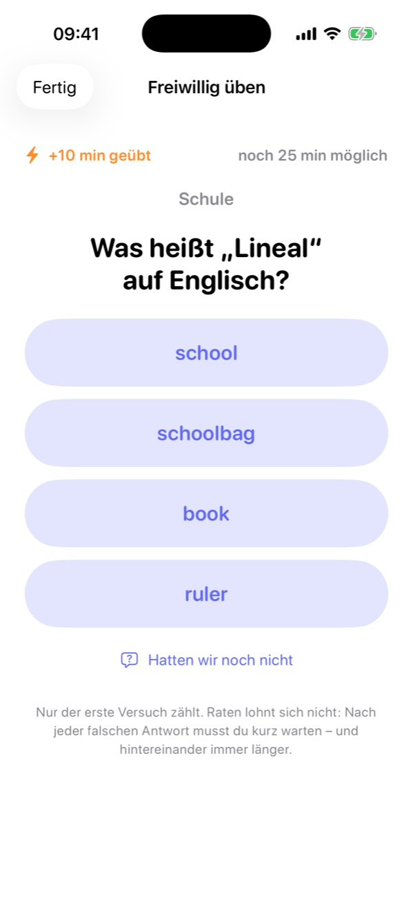

Aufgaben lösen
Jeden Tag gibt es neue Pflichtaufgaben in Mathe, Deutsch und Englisch – passend zur Klasse. Dazu kommen deine eigenen Aufgaben, Lernwörter oder Fragen aus einem fotografierten Arbeitsblatt.

Mit ZockZeit verdient sich dein Kind seine Spielzeit selbst. Die Spiele bleiben gesperrt, bis Aufgaben passend zur Klasse gelöst sind. Ohne Bildschirmzeit-Code, ohne Diskussion.
Für iPhone. 14 Tage kostenlos testen, danach 2,99 € im Monat oder 19,99 € im Jahr – für die ganze Familie.
Jeden Tag gibt es neue Pflichtaufgaben in Mathe, Deutsch und Englisch – passend zur Klasse. Dazu kommen deine eigenen Aufgaben, Lernwörter oder Fragen aus einem fotografierten Arbeitsblatt.
Jede richtige Aufgabe bringt Minuten. Wer danach freiwillig weiter übt, bekommt Extra-Zeit – bis zu einer Grenze, die du festlegst. Erst die Pflicht, dann die Kür.
Ist Zeit verdient, gehen die gesperrten Spiele auf. Die Minuten laufen nur, solange wirklich gespielt wird. Sind sie aufgebraucht, sperrt ZockZeit wieder.
Dein Kind ist dort als Kind eingetragen und hat eine eigene Apple-ID.
Deins und das deines Kindes. Beide bei iCloud angemeldet. iOS 17 oder neuer.
Alles liegt in eurer eigenen iCloud. Es gibt keinen Code, den dein Kind herausfinden kann.
Einmal etwa 15 Minuten, danach läuft alles von allein. Die App führt dich mit einer Liste durch dieselben Schritte und hakt ab, was sie selbst erkennt.
ZockZeit nutzt Apples Bildschirmzeit-Technik für Familien. Dafür muss dein Kind in deiner Familienfreigabe als Kind eingetragen sein – mit eigener Apple-ID, nicht mit deiner.
Ist dein Kind schon in der Familie? Dann ist dieser Schritt erledigt.
Lade ZockZeit auf dein iPhone und wähle „Ich bin Mama oder Papa“. Oben rechts mit + legst du dein Kind mit Namen, Geburtsjahr und Klasse an.
Auf der Startseite siehst du ab jetzt die Einrichtungs-Liste. Was ZockZeit selbst prüfen kann, hakt die App von allein ab.


Tippe in ZockZeit auf „Familie einladen“ und schick die Einladung per Nachricht an dein Kind. Wichtig: Berechtigung „Kann Änderungen vornehmen“.
Auf dem iPhone deines Kindes: ZockZeit laden, „Ich bin das Kind“ wählen und dann den Link in der Nachricht antippen. Kurz danach erscheinen dort die Aufgaben.
Der andere Elternteil wird genauso eingeladen und wählt „Ich bin Mama oder Papa“. Ihr seht dann beide dieselben Kinder und Aufgaben.

Der häufigste Stolperstein: Hast du in Apples Bildschirmzeit schon ein Limit für Spiele eingestellt, bleiben die Spiele gesperrt – auch wenn dein Kind Zeit verdient hat. Lösch dieses Limit, ZockZeit übernimmt das jetzt.
So erkennst du es am Sperrbildschirm: „Zockzeit aufgebraucht“ kommt von ZockZeit, „Zeitlimit“ mit Sanduhr kommt von Apple.
Auf dem iPhone deines Kindes in ZockZeit oben rechts aufs Zahnrad tippen, dann „Sperre einrichten“. Du bestätigst mit deiner Apple-ID. Das ist einmalig.
Kommt „Unbekannter Fehler“? Dann auf deinem iPhone unter Einstellungen → Bildschirmzeit → dein Kind → Inhalte & Datenschutz → Accountänderungen kurz auf „Erlauben“ stellen, genehmigen und danach wieder zurückstellen.
Auf deinem iPhone: dein Kind antippen, oben rechts aufs Zahnrad und „Gesperrte Apps auswählen“. Du siehst die Apps vom iPhone deines Kindes.
Am einfachsten hakst du die ganze Kategorie „Spiele“ an, dazu einzelne Apps wie YouTube oder TikTok. Neue Spiele sind dann automatisch mit drin.
Prüf auf der Seite deines Kindes, ob Klasse und Fächer stimmen. Über das Zahnrad legst du fest, wie viele Aufgaben es am Tag gibt, wie viele Minuten eine Aufgabe bringt und wie viel Extra-Zeit durch freiwilliges Üben drin ist.
Jede Einstellung hat in der App ein kleines ⓘ mit Erklärung.

Ab jetzt läuft alles von allein: Jeden Morgen gibt es neue Aufgaben, die Spiele gehen erst nach dem Lernen auf, und um Mitternacht beginnt der Tag von vorn.
Fotografier einen Lernzettel aus der Schule. ZockZeit liest den Text und macht daraus Fragen – mit Apple Intelligence direkt auf dem iPhone, nichts wird hochgeladen.

Sind die Pflichtaufgaben geschafft, kann dein Kind weiter üben und sich Extra-Minuten holen. Raten lohnt sich nicht: Falsche Antworten bringen weniger.

Fast immer ist noch ein App-Limit in Apples Bildschirmzeit aktiv (Schritt 4). Am Sperrbildschirm erkennst du es: „Zockzeit aufgebraucht“ kommt von ZockZeit, „Zeitlimit“ mit Sanduhr kommt von Apple.
Auf deinem iPhone unter Einstellungen → Bildschirmzeit → dein Kind → Inhalte & Datenschutz → Accountänderungen kurz auf „Erlauben“ stellen, genehmigen und danach wieder auf „Nicht erlauben“.
Auf dem iPhone deines Kindes ist nicht seine eigene Apple-ID angemeldet, oder es ist in der Familienfreigabe nicht als Kind eingetragen (Schritt 1).
Den Link in der Einladung auf dem Kind-iPhone antippen, nachdem dort „Ich bin das Kind“ gewählt wurde. Danach in ZockZeit auf „Ich habe den Link schon angetippt“ tippen. Beide iPhones müssen bei iCloud angemeldet sein.
Das Kind-iPhone meldet die gespielten Minuten im Hintergrund. Meist ist die Zahl nach ein paar Sekunden aktuell. Hat dein Kind ZockZeit ganz weggewischt oder ist der Stromsparmodus an, kommt sie erst, wenn ZockZeit dort wieder geöffnet wird.
Die Sperre läuft über Apples Bildschirmzeit-Technik. ZockZeit lässt sich auf dem Kind-iPhone nicht ohne deine Zustimmung löschen, und welche Apps gesperrt sind, änderst nur du. Dein iPhone-Code und dein Bildschirmzeit-Code sollten deinem Kind nicht bekannt sein.
Du testest 14 Tage kostenlos. Danach geht es mit dem Abo weiter: 2,99 € im Monat oder 19,99 € im Jahr, für alle Kinder und beide Eltern. Endet das Abo, macht ZockZeit auf dem Kind-iPhone Pause und gibt die Spiele frei.
Weitere Fragen und die Datenschutzerklärung der App: ZockZeit-Support · Datenschutz ZockZeit
Schreib mir – am einfachsten direkt aus der App unter Einstellungen → Info → Support & Feedback. Dann sind Version und Kunden-ID schon in der Mail.